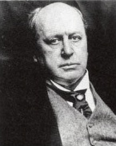

On dokuzuncu yüzyılın sonlarında, Amerika Birleşik Devletleri’nin kendisini Avrupa ile rekabet etmek için bir dünya gücü hâline getirmesinden dolayı Atlantik’in her iki tarafındaki yazarlar, Eski Dünya ile Yeni Dünya arasındaki kaçınılmaz çarpışmayı kaleme almaya başladılar. Bu gözlemcilerden en ileri görüşlü olanı Henry James’ti (1843-1916).

Amerika’da doğmuş bir yerli, ama sonrasında İngiliz vatandaşlığına geçmiş biri olarak James, gurbetçi deneyimini şekillendirdi. New York şehrinde kültürlü bir ailede dünyaya geldi. Babası Henry, seçkin bir kuramcı ve teologdu ve büyük erkek kardeşi William tanınan bir filozof oldu. James, ailesi Rhode Island, Newport’ta yerleşene kadar Londra, Paris ve Cenevre gibi çeşitli yerlerde yaşayarak sıra dışı bir şekilde kozmopolit yetişme tarzından faydalandı. Harvard Hukuk Okulu’nda eğitim alırken James, kendisini tam zamanlı yazı yazmaya adamadan evvel hikâyeler ve kitap eleştirileri kaleme aldı. James, yazısını geliştireceğine inanarak yirmili ve otuzlu yaşları boyunca Avrupa genelinde yoğun bir şekilde seyahat etmeye devam etti.
James’in ilk büyük romanı olan Amerikalı (1877), eserlerinin pek çoğunu istilâ eden çatışmayı ele alır: Yeni Dünya’nın atılganlığı ve toyluğu karşısında Eski Dünyanın medeniliği ve yozlaşmışlığı. Romanda, yeni zengin Amerikalı işadamları kaçınılmaz felakete yol açan Fransız aristokrasisinin içten pazarlıklı ve kibirli hâllerinin ortasında anlaşılması çok güç bir noktaya varırlar. Benzer şekilde Daisy Miller’da (1879) inatçı genç bir Amerikalı kadın, kendisine sadece trajedi getiren gurbetçi sosyetenin alışkanlıklarını küçümser. Ve Bir Kadının Portresi’nde (1881) bir kadın mirasçı Avrupa’da yağmacı gurbetçilerin eline düşer.
Uluslararası ortamların alışkanlıklarına attığı keskin bakışın ötesinde James, bir düzyazı üslûpçusu olarak müthiş becerilere sahipti. Uzun, bükülen cümleleri tercih etmesi, meslek hayatı boyunca, ama özellikle Elçiler (1903) gibi geç dönem romanlarında âşikardı. James’in eserlerinin hepsi, detaya yoğun ilgi göstermektedir. Karakterlerinin psikolojik motivasyonlarına ve kişilerarası ilişkilerin güç dinamiklerine özel bir dikkat harcadı. Bu bağlamda James’in romanları, on dokuzuncu yüzyılın gerçekçi geleneğine sıkıca bağlı olmasına rağmen, yirminci yüzyılın psikolojik romanlarının erken dönem öncüsü olarak görülmektedir.
EK BİLGİLER:
1. James, “Fransa’da Küçük Bir Gezi” (1888), “İngilizce Saatler” (1905) ve “İtalyanca Saatler” (1909) dâhil kurgusal olmayan gezi yazılarının çeşitli derlemelerini yayınladı.
2. Avrupa’da onlarca yıl yaşadıktan sonra James sonunda 1915 yılında İngiliz vatandaşı olmaya karar verdi. Sonraki yıl Londra’da öldü.
3. Film şirketi, Merchant Ivory Productions, “Avrupalılar” (1979), “Bostonlular” (1984) ve “Altın Kâse” (2000) dâhil olmak üzere James’in romanlarının pek çoğunun başarılı film uyarlamalarını yaptı.